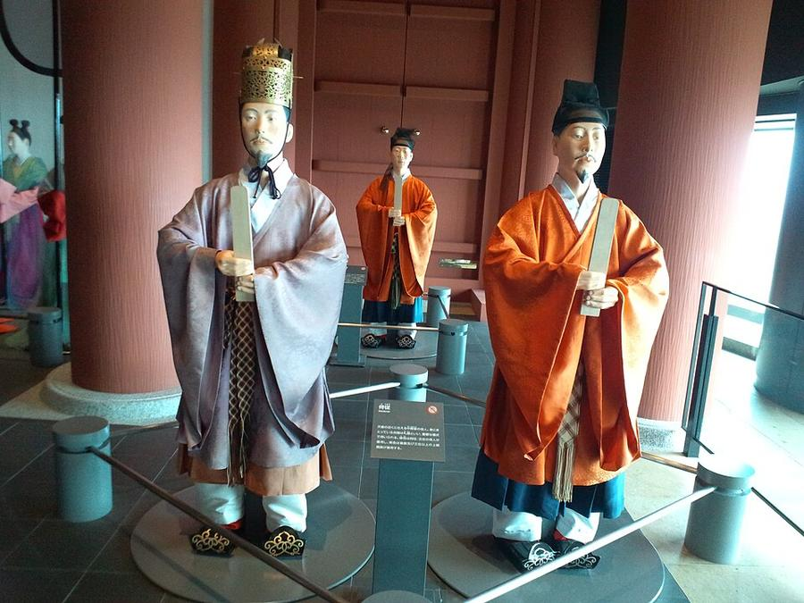
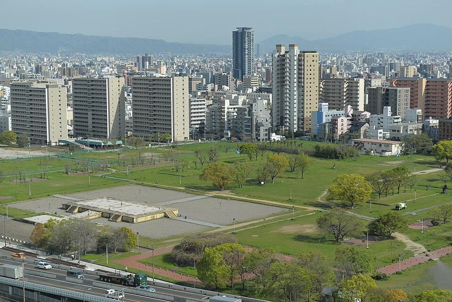
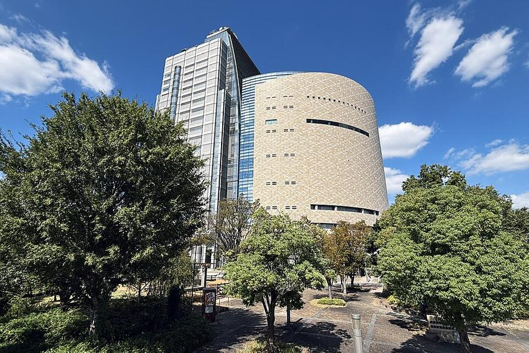

5Музей истории Осаки
大阪歴史博物館 · Замок Osaka
В плане на Сб 24.10 - смотреть день



Музей (2001) стоит на месте дворца Naniwa: в VII-VIII веках здесь была одна из первых столиц Японии, остатки дворца видны в подвале и на раскопках снаружи. Этажи музея идут от древней Naniwa через торговую Осаку эпохи Edo к XX веку. На верхнем этаже - реконструкция зала дворца с фигурами придворных (на фото).
Из окон верхних этажей - замок и поле раскопок. Хорошая первая точка дня, пока идёт дождь: метро прямо сюда, от музея до ворот замка 6 минут.
| Часы | 9:30-17:00, вход до 16:30 |
|---|---|
| Вход | 600 ¥ |
| Выходные | вторник |
| Наши даты | открыто 24-26.10; на 8 этаже выставка новых археологических находок Naniwa 2026 (входит в билет) |
| На месте | 1-1,5 ч |
| Дождь | 🏠 под крышей, в дождь - да |
Источник часов и цен: osakamushis.jp (офиц.)
Как добраться от отеля
- От отеля ~7 мин пешком до Higashi-Umeda, метро Tanimachi (фиолетовая) на Yaominami (八尾南), платформа 1: Minami-morimachi → Temmabashi → Tanimachi 4-chome, 6 мин. Выход 9 - музей рядом.
Видео


Рядом
Фото: Wikimedia Commons, автор и лицензия под каждым. Поезда: Yahoo!乗換案内 на 24-26.10.2026, пешие отрезки: OSRM. Часы и цены проверены 24.10.2026 03:16 JST. ← ко всем местам